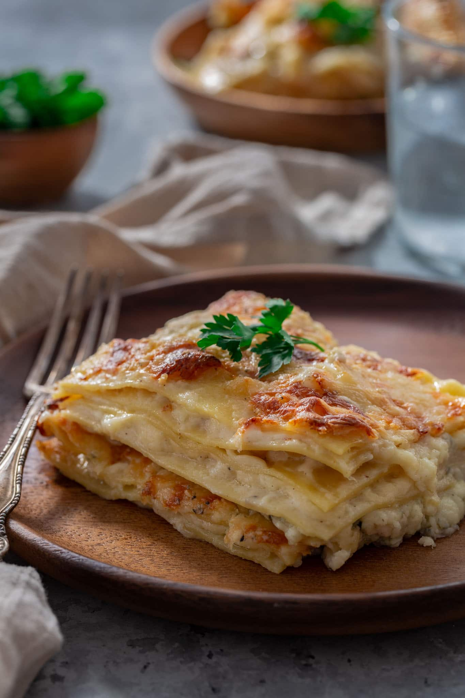
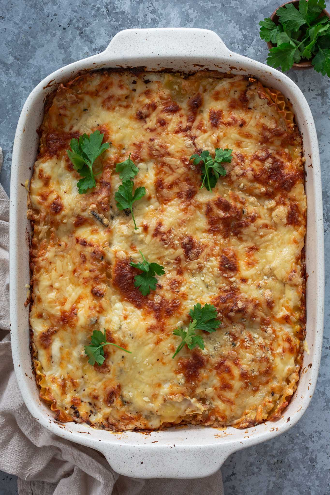

Four Cheese Lasagna

Tips and tricks for the perfect Four Cheese Lasagna
While this lasagna is pretty easy to make, there are a few things to consider if you want to take your lasagna from good to great.
- Skip the no-boil noodles. I am not against them and they work just fine in super saucy recipes. Since we are using only béchamel here – which is creamy and not runny like tomato sauce – they wouldn’t cook right and you might end up with crunchy lasagna. And not in a nice way! In a perfect world, we would all be making homemade lasagna noodles. Since that can be quite time consuming, go for fresh store-bought or traditionally-boiled noodles.
- Don’t overcook the pasta. If using regular boiled noodles, err on the side of caution and undercook them slightly. They will finish cooking in the oven.
- Set cooked noodles on a oiled baking sheet while you prepare the sauce and cheese. If you let them hang in the colander you used to drain, they will stick together and it’s going to be a pain to separate them, one by one. Ask me how I know! *facepalm*
- When assembling, start with a layer of sauce so that first layer of pasta does not stick to the pan.
- Make sure to cover the final layer of pasta with a lot of sauce to prevent the noodles from getting hard and brittle.
- Aim for at least 3 layers! But more is always better. There’s nothing like a thick, saucy lasagna!
- For best results, cover with foil for the first 15-20 minutes of baking. Then, remove so the top can turn into a delicious golden brown! (You can also pop it under the broiler to speed up the browning.)
- Be patient! Let your lasagna rest uncovered for at least 10 minutes before cutting into it to prevent it from falling apart.

INGREDIENTS
- 1 (16-ounce) package lasagna noodles, fresh or regular
- 6 tablespoons unsalted butter
- 1 shallot, finely chopped
- 2 cloves garlic, finely minced
- 6 tablespoons all-purpose flour
- 3 ½ cups whole milk, warm
- 1 bay leaf
- A pinch of freshly grated nutmeg
- Salt and freshly ground black pepper, to taste
- 8 ounces Gruyere cheese, grated
- 8 ounces mozzarella cheese, grated
- 4 ounces Parmesan cheese, grated
- 4 ounces Gorgonzola cheese, grated
EQUIPMENT
INSTRUCTIONS
- Preheat oven to 375 degrees F.
- Bring a large pot of salted water to a boil and cook the noodles until almost al dente (about 2 minutes less than what the package suggests). Drain and lay noodles on an oiled baking sheet. Reserve.
- To make the sauce: Heat the butter in a medium sauce pan, until melted. Add shallot and garlic, and sauté until fragrant and translucent, about 2 minutes. Add flour and stir or whisk quickly into the butter. Cook, stirring constantly, until golden brown – about 5 minutes. Slowly add the warm milk, loosening the roux while whisking constantly. Add bay leaf and nutmeg. Cook until starting to bubble and thicken. Remove bay leaf. Season with salt and pepper. Remove from heat and reserve.
- To assemble the lasagna, spread a thin layer of béchamel sauce in a greased 13×9 inch baking dish. Layer 4 to 5 noodles lengthwise side by side, with edges overlapping. Top with a layer of béchamel and a layer of each cheese. Repeat for 2 more layers: pasta, sauce, cheese. Top the last layer of pasta with a generous amount of sauce and then a layer of cheese. Cover with foil.
- Bake in the preheated oven for 15 minutes. Remove foil, increase temperature to 400 degrees F and continue baking for another 15 minutes or until bubbly and golden brown. You can also pop it under the broiler to speed up the browning. Remove from oven and let it rest for 10 minutes before cutting. Garnish if parsley or basil, if desired.
- Serve! :)